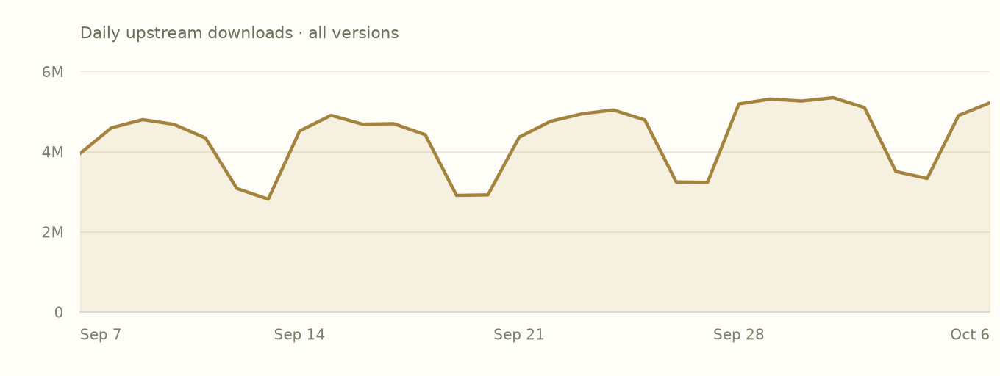
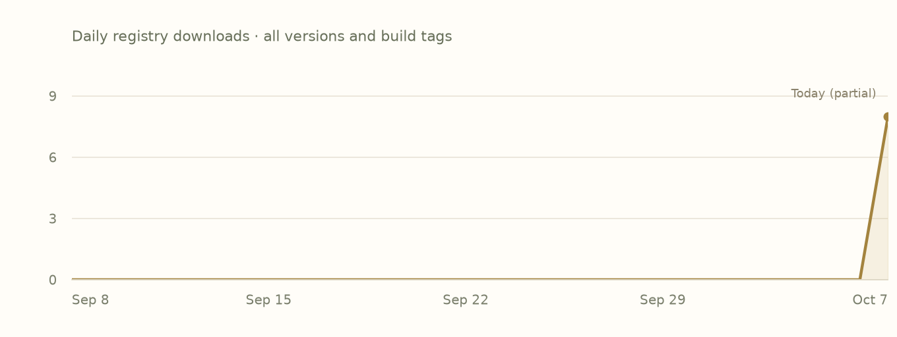

README
Author-providedFrom the checksum-verified upstream source archive. Cargo examples describe the upstream Rust library.
Serde is a framework for serializing and deserializing Rust data structures efficiently and generically.
You may be looking for:
- An overview of Serde
- Data formats supported by Serde
- Setting up
#[derive(Serialize, Deserialize)] - Examples
- API documentation
- Release notes
Serde in action
use serde::{Deserialize, Serialize};
#[derive(Serialize, Deserialize, Debug)]
struct Point {
x: i32,
y: i32,
}
fn main() {
let point = Point { x: 1, y: 2 };
// Convert the Point to a JSON string.
let serialized = serde_json::to_string(&point).unwrap();
// Prints serialized = {"x":1,"y":2}
println!("serialized = {}", serialized);
// Convert the JSON string back to a Point.
let deserialized: Point = serde_json::from_str(&serialized).unwrap();
// Prints deserialized = Point { x: 1, y: 2 }
println!("deserialized = {:?}", deserialized);
}
Getting help
Serde is one of the most widely used Rust libraries so any place that Rustaceans congregate will be able to help you out. For chat, consider trying the #rust-questions or #rust-beginners channels of the unofficial community Discord (invite: https://discord.gg/rust-lang-community), the #rust-usage or #beginners channels of the official Rust Project Discord (invite: https://discord.gg/rust-lang), or the #general stream in Zulip. For asynchronous, consider the [rust] tag on StackOverflow, the /r/rust subreddit which has a pinned weekly easy questions post, or the Rust Discourse forum. It's acceptable to file a support issue in this repo but they tend not to get as many eyes as any of the above and may get closed without a response after some time.
Features
Declared activationDefault state includes transitively enabled local features. Follow a feature name to its declaration.
Swipe horizontally to see all columns.
| Feature | Default | Enables |
|---|---|---|
alloc | No |
|
default | Yesdefault | |
derive | No | |
rc | No |
|
serde_derive | No |
|
std | Yesdefault → std |
|
unstable | No |
|
Plain names enable local features. dependency/feature forwards a dependency feature; dependency?/feature forwards only if that dependency is already enabled. Empty edges do not imply no effect in source.
Dependencies
Manifest requirementsVersion requirements and activation conditions, as recorded. These are declarations, not a resolved project graph.
Swipe horizontally to see all columns.
| Package | Requirement | Kind | Activation |
|---|---|---|---|
crates-io/serde_coreAlias: serde_core | =1.0.229Default features: disabledRequests: result | Required | Required by the manifest |
crates-io/serde_deriveAlias: serde_derive | ^1Default features: not overridden | Optional | Not activated by defaults |
Dependents
Preview coverageDeclared relationships within these six package pages. Conditional edges may depend on features or targets.
- crates-io/serde_json1.0.151 · declared direct dependency
Indexed builds
Bound assetsEach row groups compiled units with the same target, toolchain, profile and feature selection. Missing builds do not mean upstream incompatibility.
Swipe horizontally to see all columns.
| Target | Toolchain | Profile | Features | Units |
|---|---|---|---|---|
aarch64-apple-darwin | rustc 1.98.0 (88d9e12ae 2026-08-18) | debug | default, std | 1 |
Releases
Upstream & IncanUpstream release dates and recorded Incan availability. This preview displays the 1.0.229 manifest and builds; older entries link to their upstream records.
Swipe horizontally to see all columns.
| Version | Upstream released | Availability | Source |
|---|---|---|---|
1.0.229 | 2026-07-18 | Incan indexed | Release notes |
1.0.228 | 2025-09-27 | Incan indexed | Release notes |
1.0.227 | 2025-09-25 | Upstream only | Release notes |
1.0.226 | 2025-09-20 | Upstream only | Release notes |
1.0.225 | 2025-09-16 | Upstream only | Release notes |
1.0.224 | 2025-09-15 | Upstream only | Release notes |
1.0.223 | 2025-09-14 | Upstream only | Release notes |
1.0.222 | 2025-09-14 | Upstream only | Release notes |
Notes for 1.0.229
Author-provided, from the matching packaged changelog where available.
Matching release-note text was not found in the packaged source archive. Follow an available upstream source link.
Popularity
Snapshot · 2026-10-07Downloads are source-specific counts, not unique users or project installs. Both histories cover all versions.
crates.io downloads
30 complete UTC days
2026-09-07–2026-10-06 · crates.io data
View daily crates.io values
| UTC date | Downloads |
|---|---|
| 2026-09-07 | 3953378 |
| 2026-09-08 | 4595499 |
| 2026-09-09 | 4799635 |
| 2026-09-10 | 4681027 |
| 2026-09-11 | 4340816 |
| 2026-09-12 | 3082952 |
| 2026-09-13 | 2817187 |
| 2026-09-14 | 4516843 |
| 2026-09-15 | 4905939 |
| 2026-09-16 | 4686549 |
| 2026-09-17 | 4698204 |
| 2026-09-18 | 4425487 |
| 2026-09-19 | 2911500 |
| 2026-09-20 | 2924099 |
| 2026-09-21 | 4364618 |
| 2026-09-22 | 4758533 |
| 2026-09-23 | 4944882 |
| 2026-09-24 | 5040368 |
| 2026-09-25 | 4791064 |
| 2026-09-26 | 3246164 |
| 2026-09-27 | 3237059 |
| 2026-09-28 | 5190794 |
| 2026-09-29 | 5312721 |
| 2026-09-30 | 5264159 |
| 2026-10-01 | 5347223 |
| 2026-10-02 | 5101343 |
| 2026-10-03 | 3506183 |
| 2026-10-04 | 3333200 |
| 2026-10-05 | 4903317 |
| 2026-10-06 | 5220487 |
Incan registry downloads
GitHub Packages · all build tags
2026-09-08–2026-10-07 · 2026-10-07 is a partial UTC day · GitHub Packages data
View daily registry values
| UTC date | Downloads |
|---|---|
| 2026-09-08 | 0 |
| 2026-09-09 | 0 |
| 2026-09-10 | 0 |
| 2026-09-11 | 0 |
| 2026-09-12 | 0 |
| 2026-09-13 | 0 |
| 2026-09-14 | 0 |
| 2026-09-15 | 0 |
| 2026-09-16 | 0 |
| 2026-09-17 | 0 |
| 2026-09-18 | 0 |
| 2026-09-19 | 0 |
| 2026-09-20 | 0 |
| 2026-09-21 | 0 |
| 2026-09-22 | 0 |
| 2026-09-23 | 0 |
| 2026-09-24 | 0 |
| 2026-09-25 | 0 |
| 2026-09-26 | 0 |
| 2026-09-27 | 0 |
| 2026-09-28 | 0 |
| 2026-09-29 | 0 |
| 2026-09-30 | 0 |
| 2026-10-01 | 0 |
| 2026-10-02 | 0 |
| 2026-10-03 | 0 |
| 2026-10-04 | 0 |
| 2026-10-05 | 0 |
| 2026-10-06 | 0 |
| 2026-10-07 | 8 |
Security
Collection coverageUpstream advisories have not been collected
This snapshot does not contain an upstream advisory feed. Build availability and adoption do not establish that a package is free of vulnerabilities.
Provenance
Recorded evidence- Identity
crates-io/serde· 1.0.229- Adopted by
- encero-systems/incan.pub maintainers · 2026-10-06
- Index checkpoint
65d45e9e40ab2f5a04a67788dc2282b349e3f8d8- Indexed source digest
sha256:0740c17a91f9322696dd72fdf54d6362b8da024f51503fdf812fc2646a4c8bc8- Upstream crate SHA-256
sha256:4148590afebada386688f18773da617792bf2ef03ffc1e4cbd2b1d45b023e0ba- Event
- Recorded adoption event
- Popularity snapshot
- 2026-10-07 · Frozen input JSON
View recorded loaf.toml
# harvested from the release capture at b1a5c57
#
# Projection of the incan.pub event log; regenerate with `incan-pub build`, never edit.
[project]
name = "crates-io/serde"
version = "1.0.229"
[project.features]
alloc = ["serde_core/alloc"]
default = ["std"]
derive = ["serde_derive"]
rc = ["serde_core/rc"]
serde_derive = ["dep:serde_derive"]
std = ["serde_core/std"]
unstable = ["serde_core/unstable"]
[rust]
name = "serde"
type = "lib"
edition = "2021"
build-script = true
[dependencies]
serde_core = { loaf = "crates-io/serde_core", version = "=1.0.229", features = ["result"], default-features = false }
serde_derive = { loaf = "crates-io/serde_derive", version = "^1", optional = true }
[[rust.facts]]
toolchain = "rustc 1.98.0 (88d9e12ae 2026-08-18)"
target = "aarch64-apple-darwin"
profile = "debug"
features = ["default", "derive", "serde_derive", "std"]
cfg = ["if_docsrs_then_no_serde_core"]
out = [{ name = "private.rs", path = "out/private.rs", digest = "sha256:edaefc31eb178d1c82d9ab94c18a374316f8ff13ad55147cc631698dc9498162" }]
[[rust.facts]]
toolchain = "rustc 1.98.0 (88d9e12ae 2026-08-18)"
target = "aarch64-apple-darwin"
profile = "debug"
features = ["default", "std"]
cfg = ["if_docsrs_then_no_serde_core"]
out = [{ name = "private.rs", path = "out/private.rs", digest = "sha256:edaefc31eb178d1c82d9ab94c18a374316f8ff13ad55147cc631698dc9498162" }]
[[rust.facts]]
toolchain = "rustc 1.98.0 (88d9e12ae 2026-08-18)"
target = "aarch64-apple-darwin"
profile = "release"
features = ["default", "derive", "serde_derive", "std"]
cfg = ["if_docsrs_then_no_serde_core"]
out = [{ name = "private.rs", path = "out/private.rs", digest = "sha256:edaefc31eb178d1c82d9ab94c18a374316f8ff13ad55147cc631698dc9498162" }]
harvested-from = "sha256:c16ad44b089ea95b80a8268b1b4bea9659316cff539b72898eb9c185fceda78c"
[[rust.facts]]
toolchain = "rustc 1.98.0 (88d9e12ae 2026-08-18)"
target = "x86_64-unknown-linux-gnu"
profile = "debug"
features = ["default", "std"]
cfg = ["if_docsrs_then_no_serde_core"]
out = [{ name = "private.rs", path = "out/private.rs", digest = "sha256:edaefc31eb178d1c82d9ab94c18a374316f8ff13ad55147cc631698dc9498162" }]